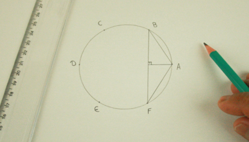
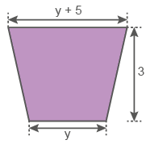

80
Unidade 4 - Medidas de superfície e de volume
![Fotografia de página inteira da Fachada do Banco Central do Brasil, em Brasília. Ele possui uma torre central no formato de um quadrado e quatro grandes blocos retangulares sobressalentes. Eles são pretos formados por figuras geométricas retangulares e quadradas. Dois à esquerda da torre, sendo um na parte de cima e o outro na parte debaixo. O da parte de cima tem a altura quase o dobro que o da parte de baixo. A base dos dois tem o mesmo comprimento. O mesmo ocorre à direita da torre: dois blocos retangulares, um na parte de cima e o outro na parte debaixo.](../../resources/images/8ANO_U4_image/M8A_8_ano_mat_P_74_banco_central_do_Brasil.png)
Muitas são as construções que nos fascinam por sua beleza arquitetônica. Os edifícios, monumentos e fachadas são constituídos por uma verdadeira “geometria urbana”.
81

- Observe a fotografia do prédio do Banco Central em Brasília. Como você pode descrever a sua forma?
- Na outra fotografia podemos observar a fachada do edifício Hearst Tower em Midtown, Manhattan, Nova Iorque. Que figuras geométricas você identifica nesta fachada?
- Na sua cidade, há construções que compõem uma “geometria urbana”? Como você as descreveria?
82
CAPÍTULO 1 - Cálculo da área de figuras planas
Nas construções feitas pelo homem e também na natureza encontramos diversas formas geométricas. Observe a seguir um exemplo de forma geométrica natural:

As abelhas colhem o néctar das flores e com isso ajudam na polinização delas. Com esse pólen produzem o mel em alvéolos que lembram hexágonos que se encaixam perfeitamente sem deixar espaços entre eles, formando o favo de mel.
- Vamos construir as figuras geométricas encontradas nos favos de mel? Para isso, juntamente com um colega, vejam quais são os materiais necessários e o procedimento a ser seguido.
Materiais
- Folha de papel sulfite
- Cola
- Compasso
- Régua
- Calculadora
- Tesoura
83
Procedimento
-
Peguem uma folha em branco e um compasso e tracem uma circunferência com 4 cm de raio.

-
A seguir, utilizando a mesma medida para a abertura do compasso, marquem sobre a circunferência os pontos A, B, C, D, E e F.

-
Unam os pontos, em sequência, para formar um hexágono. Assim, vocês terão a representação das paredes do alvéolo. Calculem, no caderno, o perímetro desse hexágono.
-
Façam outra circunferência com 4 cm de raio e marque os pontos A, B, C, D, E e F com a mesma abertura. Unam os vértices A com B e F com A. Tracem BF, unindo os vértices B e F. Formem dois triângulos retângulos, conforme a imagem.
 -
Com a tesoura, recortem os dois triângulos e completem o outro lado do hexágono para formar um retângulo. Colem a figura formada no caderno. Com o auxílio de uma régua, meçam as medidas encontradas para os lados do retângulo.
84
- Quais são as medidas do retângulo formado?
- O retângulo e o hexágono têm a mesma área?
- Qual é a medida aproximada da área do retângulo formado?
- Em relação a um quadrado com o mesmo perímetro desse hexágono, respondam no caderno:
- Quanto mede o lado desse quadrado?
- Qual é a área desse quadrado?
- Comparando a área do quadrado com a do hexágono, o que podemos concluir?
As abelhas, [...] em virtude de certa intuição geométrica [...], sabem que o hexágono é maior que o quadrado e o triângulo, e conterá mais mel com o mesmo gasto de material.
Papus de Alexandria
BOYER, Carl B. História da Matemática. São Paulo: Edgard Blucher, 1996. p. 120.

Colméia, 2018.

Agora vejamos outras situações que envolvem o cálculo de área de polígonos.
Situação 1
A turma de Joaquim fez alguns trabalhos sobre o meio ambiente, que foram impressos em folhas de papel A4. Um mural será composto por 35 folhas desse papel. Sabendo que as dimensões de uma folha de papel A4 são 210 mm por 297 mm, qual deverá ser a área mínima do mural, em metros quadrados, para que todas as folhas possam ser colocadas nele, sem que haja sobreposição?
85
Para calcular a área total do mural, primeiro precisamos saber a área relativa a uma folha de papel. Como a folha contém um formato retangular, temos:
Afolha = b · h
Afolha = 210 mm · 297 mm
Afolha = 62 370 mm²
Afolha = 0,06237 m²
Cada folha ocupará um espaço de 0,06237 m².
Agora, vamos calcular o espaço ocupado por 35 folhas iguais a essa.
Amural = 35 · 0,06237 m²
Amural = 2,18295 m²
Portanto, a área ocupada pelo mural será de 2,18295 m², ou seja, aproximadamente 2,2 m².
Situação 2
O mosaico a seguir é formado por trapézios, losangos e triângulos. Os polígonos iguais são congruentes entre si. Represente o polinômio que indica a área de cada figura geométrica e a área desse mosaico.
![Mosaico retangular na horizontal com a medida de 24 centímetros de largura. O mosaico é formado por triângulos azuis-claros, trapézios azuis-escuros e losangos azuis-claros, totalizando 26 figuras geométricas. Da esquerda para a direita, dois triângulos azuis-claros com o vértice apontado para a direita. Os triângulos são isósceles congruente, figura com dois lados com as laterais iguais. O lado com medida diferente é chamado base do triângulo isósceles. A base do triângulo da figura mede duas vezes a medida x. À direita deles, quatro trapézios, um em cima do outro. Os trapézios são isósceles, figura com dois lados com laterais iguais. Cada trapézio mede 3 centímetros na base menor e mede x de altura. O primeiro tem a base maior voltada para cima. O segundo, a base maior voltada para baixo, sendo que as bases menores dos dois trapézios se encontram e coincidem com o vértice do triângulo. A mesma formação repete no terceiro e quarto trapézio. Na sequência, dois losangos na vertical. A diagonal menor do losango mede 3 centímetros, a maior 2x. À direita dos losangos a mesma sequência de trapézios, seguida da mesma sequência de losangos e outra sequência de trapézios. O mosaico finaliza com dois triângulos com o vértice voltado para a esquerda.](../../resources/images/8ANO_U4_image/U4_Mosaico.png)
86
Observe que o mosaico é composto por: 16 trapézios, 6 losangos e 4 triângulos. Então, primeiro vamos calcular a área de um trapézio, de um losango e de um triângulo.
B: base maiorD: diagonal maiorb: base
b: base menord: diagonal menorh: altura
h: altura
A área total do mosaico é igual a:
16 · 4,5x + 6 · 3x + 4 · 1,5x = 72x + 18x + 6x = 96x ou 24 · 4x = 96x
O polinômio que indica a área total desse mosaico é 96x e as áreas dos polígonos são 4,5x, 3x e 1,5x.

Piso de ladrilhos triangulares, 2018.
Situação 3
Ao andar por algumas ruas, podemos observar a presença de mosaicos nas calçadas. Na fotografia ao lado, há uma calçada formada por um mosaico com triângulos.
Supondo que esses triângulos sejam congruentes, em que a base mede 2x e a altura 4x, represente o polinômio que indica a área total de uma calçada composta por 32 triângulos iguais a esses.
Para saber a área total, inicialmente precisamos conhecer a área de um dos triângulos.
87
b: base do triângulo
h: altura do triângulo
Área total da calçada:
32 · 4x² = 128x²
O polinômio que indica a área total é 128x².
Encontre soluções
- A malha quadriculada representa um esquema de 18 cm por 21 cm, que será
utilizado como modelo para a confecção de uma colcha de retalhos.
Algumas regiões formadas por polígonos serão feitas com tecidos coloridos,
e o restante com tecido branco.

De acordo com o esquema, faça o que se pede.
- Calcule, em seu caderno, as áreas ocupadas pelas regiões em vermelho, roxo e rosa.
- Qual é a área da região que será composta de tecido branco?
- Lucas esboçou a planificação de uma caixa de papelão, conforme a figura a seguir.

- Represente o polinômio que indica a área da caixa.
- Qual polinômio representa o perímetro dessa caixa?
- Para a = 4 cm, b = 8 cm e c = 6 cm:
- quantos cm² de área a planificação da caixa apresenta?
- quantos centímetros o contorno da caixa tem?
88
- Indique o polinômio que representa a área de cada uma das figuras a seguir.
-

-

- 
-
- Crie, em seu caderno, um problema em que seja necessário o cálculo da área de um triângulo. Troque seu caderno com um colega para que um resolva o problema do outro e, juntos, avaliem se a resolução está correta.
- Observe a figura e responda em seu caderno:
- Qual polinômio representa a área da região colorida?
- Calcule a área, sabendo que x = 5 cm e y = 3 cm.
- Na malha abaixo, estão representados quatro canteiros.
![Malha formada por pequenos retângulos com quatro áreas, ou canteiros, demarcadas por linhas vermelhas contínuas.
O canteiro I é formado por dezesseis retângulos, sendo doze divididos ao meio por uma linha vermelha diagonal. O perímetro desse canteiro é de 60 m.
O canteiro II é formado por dezesseis retângulos, sendo oito divididos ao meio por uma linha vermelha diagonal e oito retângulos com uma lateral menor marcados pela linha vermelha. O perímetro desse canteiro é de 64 m.
O canteiro III é formado por oito retângulos, sendo oito lados maiores e oito lados menores marcados pela linha vermelha. O perímetro desse canteiro é de 56 m.
O canteiro IV é formado por doze retângulos, sendo oito divididos ao meio por uma linha vermelha diagonal, quatro lados maiores e quadro lados menores marcados pela linha vermelha. O perímetro desse canteiro é desconhecido.](../../resources/images/8ANO_U4_image/U4_Encontre03.png)
Se os perímetros dos canteiros I, II e III são, respectivamente, 60 m, 64 m e 56 m, responda:
- Qual é o perímetro do canteiro IV?
- Qual é a área de cada um dos canteiros?
- Qual canteiro tem a maior área?
- Quais canteiros apresentam a mesma área?
- Mostre duas maneiras diferentes de calcular a área total da figura e, em seguida, represente o polinômio que indica a área do quadrado maior.

89
- Observe o polígono representado e no caderno:

- Escreva o polinômio que representa a área desse polígono.
- Calcule o valor numérico da área do polígono nos seguintes casos:
- para x = 5 cm e y = 3,5 cm;
- para x = 3,5 cm e y = 2,5 cm.
- Escreva o polinômio que representa o perímetro desse polígono.
- Calcule o valor numérico do perímetro do polígono nos seguintes casos:
- para x = 5 cm e y = 3,5 cm;
- para x = 3,5 cm e y = 2,5 cm.
- Observe esta figura:
![Ilustração de um polígono formado por cinco seguimentos de reta. Um seguimento, horizontal, denominado a, faz a base da figura. Dois seguimentos, do mesmo tamanho, verticais, denominados b, fazem as laterais, esquerda e direita, criando dessa forma 4 pontos: Ponto A, ponta superior do seguimento b, esquerdo; Ponto B, vértice formado pela ponta inferior do seguimento b, esquerdo, com o lado esquerdo do seguimento a; Ponto C, vértice formado pela ponta inferior do seguimento b, direita, com o lado direito do seguimento a; Ponto D, ponta superior do seguimento b, direito. Outros dois seguimentos , diagonais e maiores, saem das pontas superiores dos seguimentos b. O primeiro seguimento sai do ponto A e vai até o ponto C, e o segundo sai do ponto D e vai até o ponto B. Esses seguimento se cruzam, no centro, formando um X. O ponto deste cruzamento é denominado de E. Um seguimento tracejado sai do ponto E e vai até o centro do seguimento horizontal a, com uma demarcação representada por b sobre 2.](../../resources/images/8ANO_U4_image/U4_Encontre11.png)
Escreva o polinômio que representa a área do polígono ABCDE.
- A figura a seguir é formada somente por quadrados. Escreva o polinômio que indica a sua área.
- Dez octógonos regulares, cuja medida do lado é igual a x, foram justapostos em um retângulo, como mostra a figura abaixo.
![Um retângulo na horizontal com dez octógonos brancos: cinco na parte de cima e cinco, na debaixo. As outras áreas que preenchem o retângulo são triângulos e losangos azuis. Eles estão distribuídos em três partes: a de cima, a do centro e a de baixo. Na parte de cima são seis triângulos, sendo os dois da ponta metade do tamanho dos triângulos centrais. Na do centro são dois triângulos e quatro losangos. Os dois triângulos estão localizados nas pontas e possuem o mesmo tamanho dos triângulos centrais da parte de cima. A parte de baixo repete a sequência dos seis triângulos de cima sendo os dois da ponta metade do tamanho dos triângulos centrais.](../../resources/images/8ANO_U4_image/U4_Encontre12.png)
Escreva o polinômio que indica a área total da região colorida. - Uma casa tem um jardim com o formato da figura a seguir.

- Determine o polinômio que representa a área deste jardim.
- Calcule o seu valor numérico para a = 2 m e b = 3 m.